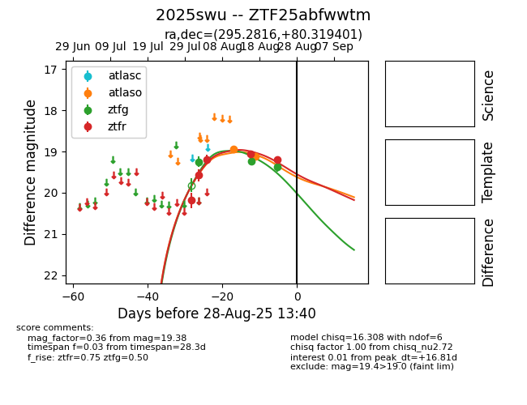

Target 2025swu at 2025-08-22 15:51, see:
FINK: fink-portal.org/ZTF25abfwwtm
Lasair: lasair-ztf.lsst.ac.uk/objects/ZTF25abfwwtm
ALeRCE: alerce.online/object/ZTF25abfwwtm
TNS: wis-tns.org/object/2025swu
YSE: ziggy.ucolick.org/yse/transient_detail/2025swu
alt names
ZTF25abfwwtm (ztf,alerce)
2025swu (tns,yse)
coordinates:
equatorial (ra, dec) = (295.2817,+80.31940)
galactic (l, b) = (112.5211,+24.66408)
photometry
last atlaso=19.11, ztfr=19.05
2 atlaso, 3 ztfr detections
